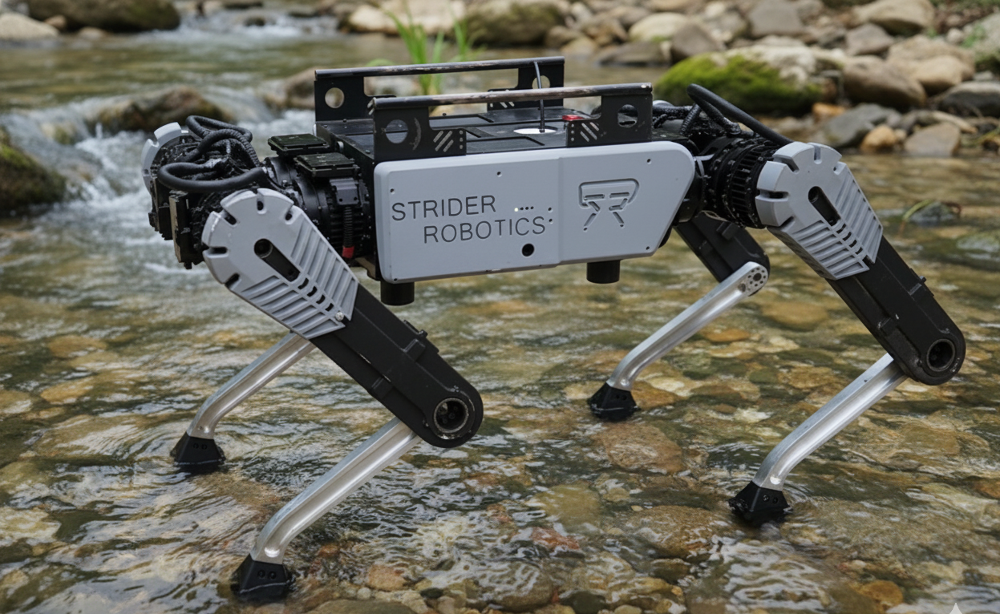

Full-Time · Strider Robotics
Two years at Strider Robotics building software for legged robots that operate in the real world. I started on the systems side — locomotion control, state estimation, and hardware integration for a quadruped robot — then moved to the autonomy team, where I designed and built a full perception framework for autonomous industrial inspection, deployed on real robots for Fortune 500 clients.

Aug 2024 — Dec 2025 · Systems & Controls
The first year and a half was about the fundamentals of legged locomotion — getting the robot to move reliably and know where it is at all times. This meant working deep in the control stack: integrating MPC-based control with foothold optimisation for stable traversal on uneven terrain, implementing fall recovery strategies for autonomous self-righting, and building a state estimator that worked without GPS.
On the hardware side, I engineered a custom CAN transport layer for Strider's in-house motor drivers: integrated as a ROS 2 Control hardware interface across 12 actuators, with a 300% throughput improvement over the previous implementation.
I also built automated actuator characterisation pipelines to identify actuator dynamics, which directly reduced the sim-to-real gap and sped up reinforcement learning experiments.
Jan 2026 — Apr 2026 · Autonomy & Perception
In early 2026 I moved to the autonomy team. The goal was to take the robot — which could already walk — and turn it into an autonomous industrial inspector capable of reading gauges, detecting hazards, and executing multi-step tasks without human intervention. I designed and built the full perception and orchestration framework from scratch.
This got deployed on real robots for client field operations — the first time I had software I wrote running unsupervised in an actual industrial facility.
Enhanced the robot's locomotion reliability by integrating Model Predictive Control with foothold optimisation. The controller selects optimal foothold positions in real time to maintain balance on uneven terrain — a common challenge in industrial environments. Also developed fall recovery strategies that allow the robot to autonomously right itself after a tip-over, without requiring human intervention.
Designed a Kalman filter–based state estimator fusing data from an IMU, joint encoders, and foot contact estimators. The goal was reliable localisation in GPS-denied indoor environments where the robot would be deployed. The estimator feeds position, velocity, and orientation estimates to the locomotion controller and the perception stack.
Built automated testing pipelines to measure and model actuator dynamics — identifying friction, backlash, and delay characteristics for each joint. The resulting models were used to reduce discrepancies between simulation and real-world behaviour, which meaningfully sped up the reinforcement learning iteration loop.
Engineered a custom CAN transport layer for Strider's in-house motor drivers, integrated as a ROS 2 Control hardware interface. The implementation handles real-time communication across 12 actuators simultaneously — achieving a 300% improvement in throughput over the previous implementation, with under 1 PPM data loss under sustained load.
The transport layer abstracts the CAN bus behind the standard ROS 2 Control
hardware_interface::SystemInterface,
so the rest of the control stack talks to it like any other hardware — making the custom
drivers a drop-in replacement with no changes to the controllers above.
The core deliverable of my time on the autonomy team was a 5-layer modular ROS 2 architecture for running vision and perception tasks on industrial inspection robots. The design philosophy: hardware, application logic, and task orchestration should be completely independent layers, so that new inspection tasks can be added quickly without touching the underlying framework.
Each layer has a single responsibility and communicates with adjacent layers through well-defined ROS 2 interfaces.
Built two main perception capabilities as lifecycle nodes: analog gauge reading and fire extinguisher detection. Both use YOLO models trained on custom datasets via Ultralytics. Because each CV node is a standalone lifecycle node, it can be activated, deactivated, and tested completely independently of the rest of the stack — which made iteration significantly faster.
The orchestrator is built on a behavior tree–based architecture with ROS 2 lifecycle management. A new inspection task — for a new client site or a new type of equipment — can be implemented in around 200 lines of code, with 80% of that being YAML configuration. The core framework stays untouched. This made it practical to deploy across multiple clients without a separate software effort for each.